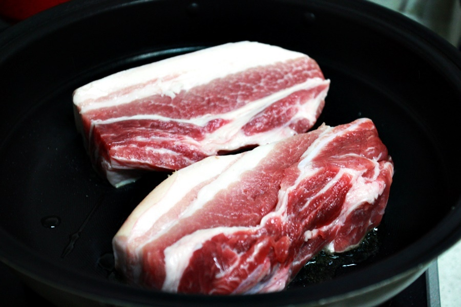
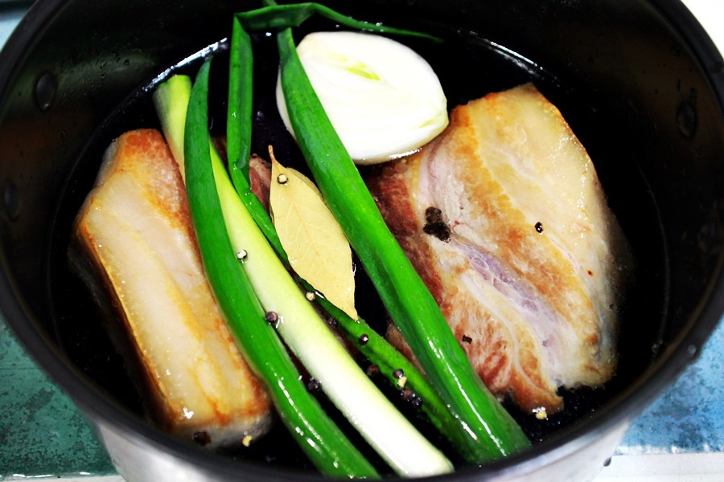
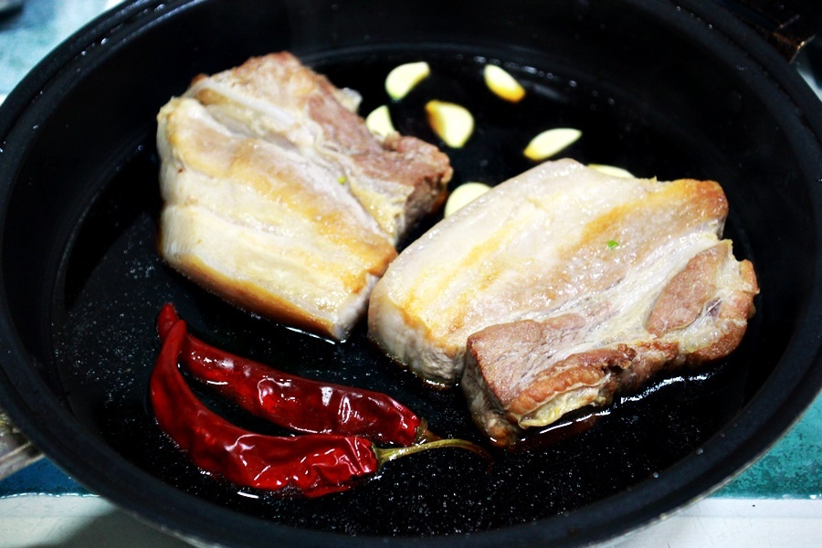
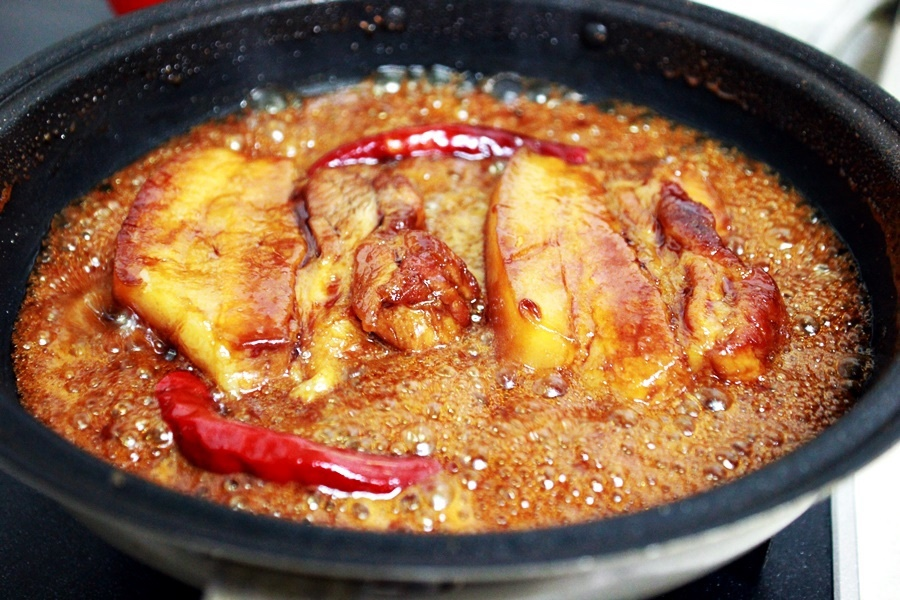

Chinese Food


재료 리스트
통삼겹살 1kg | 청경채 300g | 대파 1대 | 양파 1/2개 | 월계수 잎 1장 | 마늘 5개 | 생강 1개 | 통후추
조림장 양념( 간장 10스푼 | 설탕 2스푼 | 올리고당 1스푼 | 맛술 1스푼 | 마른 고추 2개 )
레시피
1. 통삼겹살을 겉면만 노릇노릇하게 구워주세요.

2. 냄비에 물을 넣고 돼지고기, 대파, 양파, 생강, 마늘, 월계수 잎, 통후추를 넣고 고기가 익을 때까지 삶아주세요.

3. 다른 냄비를 준비해 조림장과 마른 고추를 넣고 고기와 함께 조려주세요.
조리는 중 소스가 잘 베이도록 고기를 뒤집어주세요.

4. 소스가 끓어 반정도로 줄었을 때 불을 꺼준 뒤 돼지고기를 썰어 접시에 옮겨 담아주세요.

동파육 완성 !!